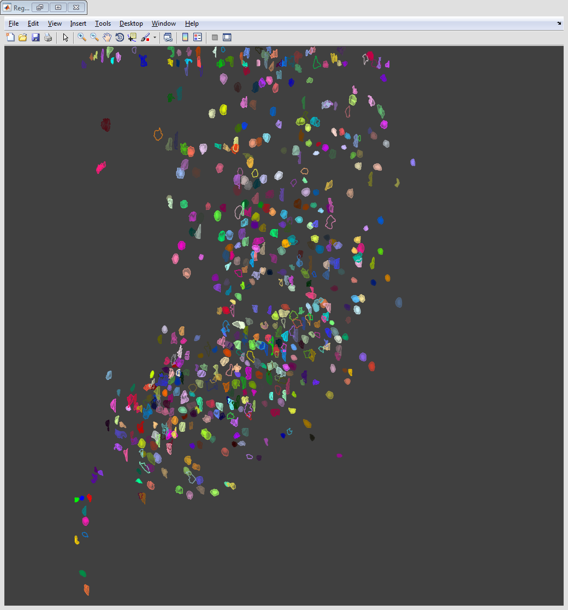
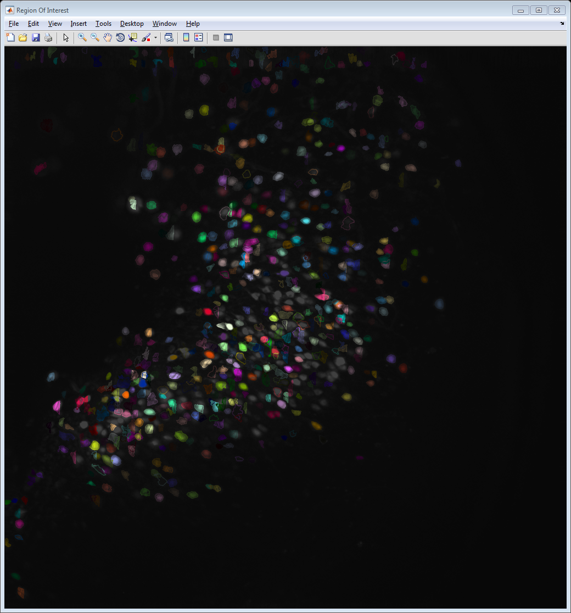
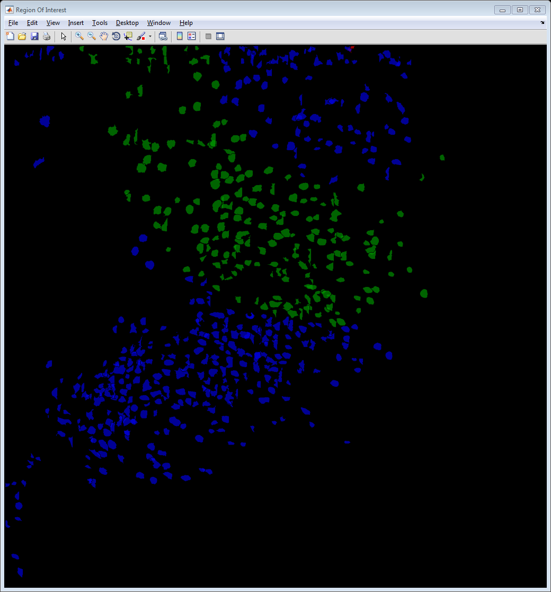
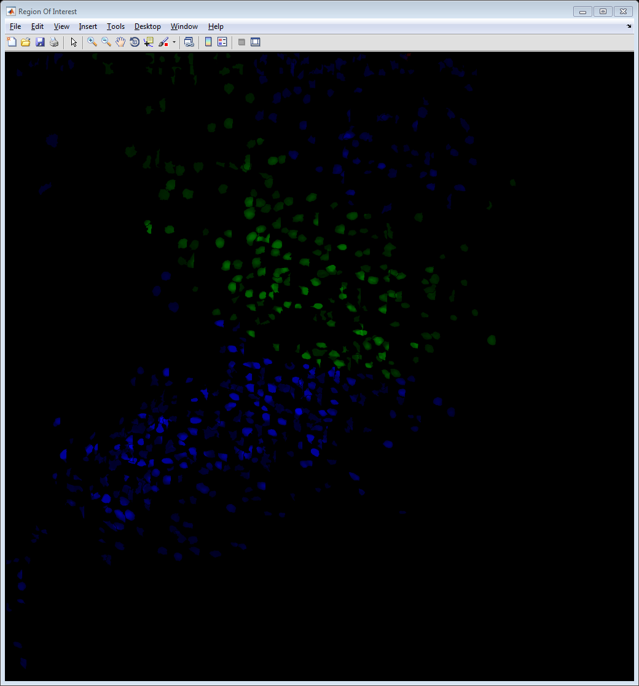
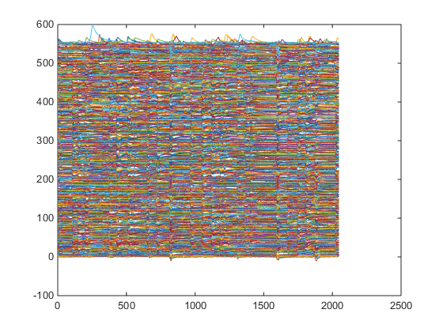
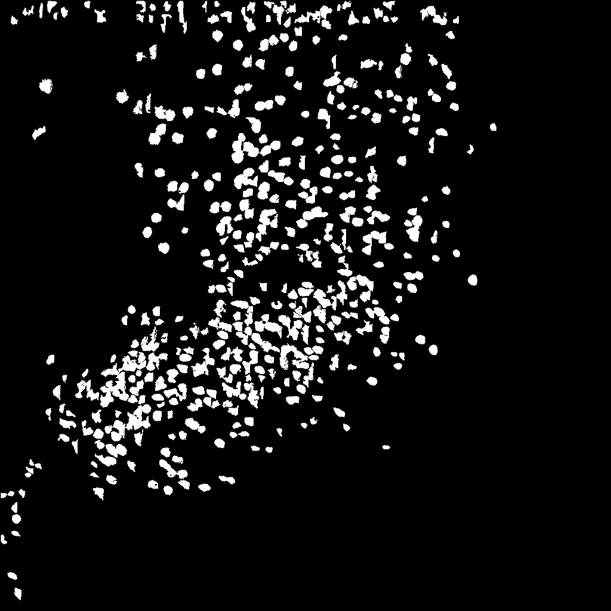
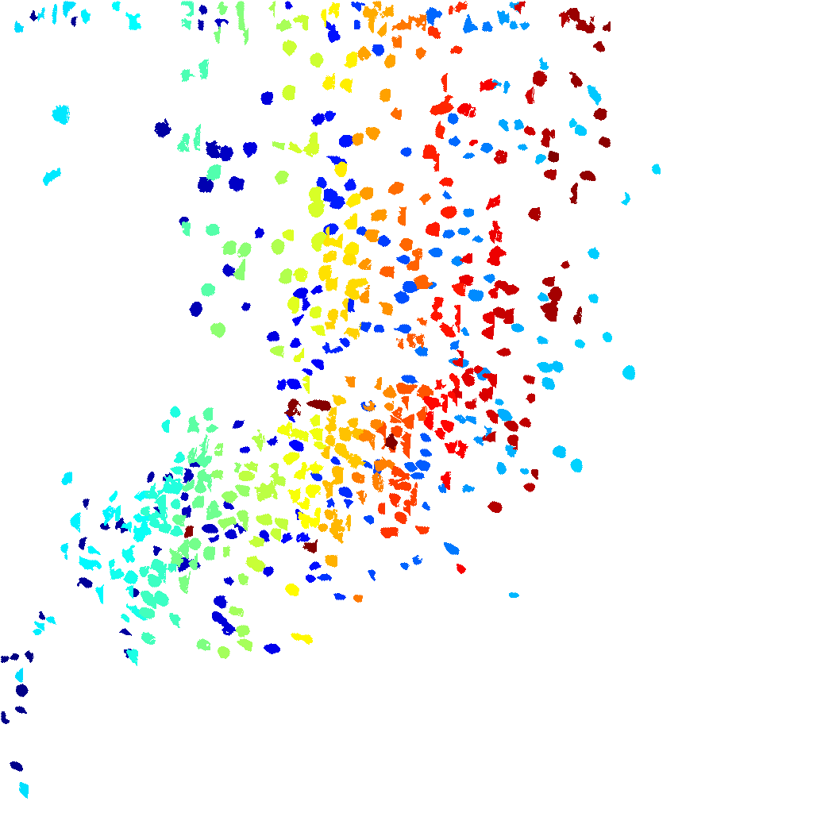

RUN WIDE-FIELD FLUORESCENCE
Run the function that will process example data files. Select all Tiff files at once by selecting the first Tiff file, then holding SHIFT while clicking on the last Tiff file.
Contents
PROCESS INPUT
Run processFast() function, returning file-names that can be used to restore data, along with RegionOfInterest class ROIs.
[allVidFiles, R, info, uniqueFileName] = processFast();
process fast Loading Final Submission from 1 files (512 frames) Correcting Motion Normalizing Fluorescence Signal Input MINIMUM: 0 Input MAXIMUM: 30576 Input RANGE: 30576 Input MEAN: 4.113747e+03 Post-Min-Subtracted MINIMUM: 0 Post-Min-Subtracted MAXIMUM: 26405 Post-Min-Subtracted RANGE: 26405 Post-Min-Subtracted MEAN: 1.396522e+03 Output MINIMUM: 0 Output MAXIMUM: 55890 Output RANGE: 55890 Output MEAN: 2.855054e+03 Starting parallel pool (parpool) using the 'local' profile ... connected to 20 workers. Warning: StartDelay property is limited to 1 millisecond precision. Sub-millisecond precision will be ignored. Processing: F:\Final Submission\Ali26-day5(00001)-2.tif Binary file write to disk completed: 5.000000e-01 GB written in 1.803 seconds (or better) --> 283.9 MB/s Loading Final Submission from 1 files (512 frames) Correcting Motion Normalizing Fluorescence Signal Input MINIMUM: 0 Input MAXIMUM: 33929 Input RANGE: 33929 Input MEAN: 4.038474e+03 Post-Min-Subtracted MINIMUM: 0 Post-Min-Subtracted MAXIMUM: 27216 Post-Min-Subtracted RANGE: 27216 Post-Min-Subtracted MEAN: 1.321272e+03 Output MINIMUM: 0 Output MAXIMUM: 57697 Output RANGE: 57697 Output MEAN: 2.852669e+03 Warning: StartDelay property is limited to 1 millisecond precision. Sub-millisecond precision will be ignored. Processing: F:\Final Submission\Ali26-day5(00001)-3.tif Binary file write to disk completed: 5.000000e-01 GB written in 1.769 seconds (or better) --> 289.4 MB/s Loading Final Submission from 1 files (512 frames) Correcting Motion Normalizing Fluorescence Signal Input MINIMUM: 0 Input MAXIMUM: 35319 Input RANGE: 35319 Input MEAN: 4.033561e+03 Post-Min-Subtracted MINIMUM: 0 Post-Min-Subtracted MAXIMUM: 28784 Post-Min-Subtracted RANGE: 28784 Post-Min-Subtracted MEAN: 1.316358e+03 Output MINIMUM: 0 Output MAXIMUM: 60965 Output RANGE: 60965 Output MEAN: 2.853445e+03 Warning: StartDelay property is limited to 1 millisecond precision. Sub-millisecond precision will be ignored. Processing: F:\Final Submission\Ali26-day5(00001)-4.tif Binary file write to disk completed: 5.000000e-01 GB written in 1.765 seconds (or better) --> 290.2 MB/s Loading Final Submission from 1 files (511 frames) Correcting Motion Normalizing Fluorescence Signal Input MINIMUM: 1 Input MAXIMUM: 29814 Input RANGE: 29813 Input MEAN: 4.045595e+03 Post-Min-Subtracted MINIMUM: 0 Post-Min-Subtracted MAXIMUM: 25905 Post-Min-Subtracted RANGE: 25905 Post-Min-Subtracted MEAN: 1.328384e+03 Output MINIMUM: 0 Output MAXIMUM: 54679 Output RANGE: 54679 Output MEAN: 2.851862e+03 Binary file write to disk completed: 4.990234e-01 GB written in 1.759 seconds (or better) --> 290.5 MB/s Finding groups for 576 Regions Of Interest Finding groups for 75 Regions Of Interest Finding groups for 76 Regions Of Interest Finding groups for 49 Regions Of Interest Finding groups for 131 Regions Of Interest Finding groups for 245 Regions Of Interest Finding groups for 232 Regions Of Interest Finding groups for 229 Regions Of Interest Finding groups for 436 Regions Of Interest Finding groups for 367 Regions Of Interest Finding groups for 532 Regions Of Interest Finding groups for 419 Regions Of Interest Finding groups for 662 Regions Of Interest Finding groups for 842 Regions Of Interest Finding groups for 1141 Regions Of Interest Finding groups for 175 Regions Of Interest Finding groups for 284 Regions Of Interest Finding groups for 11 Regions Of Interest Finding groups for 32 Regions Of Interest Finding groups for 345 Regions Of Interest Finding groups for 113 Regions Of Interest Finding groups for 68 Regions Of Interest Finding groups for 55 Regions Of Interest Finding groups for 20 Regions Of Interest Finding groups for 136 Regions Of Interest Finding groups for 294 Regions Of Interest Finding groups for 514 Regions Of Interest Finding groups for 926 Regions Of Interest Finding groups for 705 Regions Of Interest Finding groups for 1246 Regions Of Interest Finding groups for 1651 Regions Of Interest Finding groups for 1130 Regions Of Interest Finding groups for 1110 Regions Of Interest Finding groups for 907 Regions Of Interest Finding groups for 162 Regions Of Interest Finding groups for 278 Regions Of Interest Finding groups for 85 Regions Of Interest Finding groups for 629 Regions Of Interest Finding groups for 39 Regions Of Interest Finding groups for 31 Regions Of Interest Finding groups for 36 Regions Of Interest Finding groups for 42 Regions Of Interest Finding groups for 33 Regions Of Interest Finding groups for 105 Regions Of Interest Finding groups for 55 Regions Of Interest Finding groups for 166 Regions Of Interest Finding groups for 225 Regions Of Interest Finding groups for 1128 Regions Of Interest Finding groups for 1484 Regions Of Interest Finding groups for 1392 Regions Of Interest Finding groups for 344 Regions Of Interest Finding groups for 23 Regions Of Interest Finding groups for 54 Regions Of Interest Finding groups for 11 Regions Of Interest Finding groups for 18 Regions Of Interest Finding groups for 20 Regions Of Interest Finding groups for 490 Regions Of Interest Finding groups for 1387 Regions Of Interest Finding groups for 1265 Regions Of Interest Finding groups for 773 Regions Of Interest Finding groups for 189 Regions Of Interest Finding groups for 37 Regions Of Interest Finding groups for 294 Regions Of Interest Finding groups for 136 Regions Of Interest Finding groups for 142 Regions Of Interest Finding groups for 265 Regions Of Interest Finding groups for 102 Regions Of Interest Finding groups for 459 Regions Of Interest Finding groups for 360 Regions Of Interest Finding groups for 287 Regions Of Interest Finding groups for 356 Regions Of Interest Finding groups for 343 Regions Of Interest Finding groups for 572 Regions Of Interest Finding groups for 1164 Regions Of Interest Finding groups for 1363 Regions Of Interest Finding groups for 236 Regions Of Interest Finding groups for 76 Regions Of Interest Finding groups for 138 Regions Of Interest Finding groups for 49 Regions Of Interest Finding groups for 91 Regions Of Interest Finding groups for 245 Regions Of Interest Finding groups for 17 Regions Of Interest Finding groups for 12 Regions Of Interest Finding groups for 148 Regions Of Interest Finding groups for 392 Regions Of Interest Finding groups for 968 Regions Of Interest Finding groups for 1093 Regions Of Interest Finding groups for 826 Regions Of Interest Finding groups for 253 Regions Of Interest Finding groups for 112 Regions Of Interest Finding groups for 91 Regions Of Interest Finding groups for 261 Regions Of Interest Finding groups for 16 Regions Of Interest Finding groups for 172 Regions Of Interest Finding groups for 298 Regions Of Interest Finding groups for 402 Regions Of Interest Finding groups for 231 Regions Of Interest Finding groups for 11 Regions Of Interest Finding groups for 232 Regions Of Interest Finding groups for 63 Regions Of Interest Finding groups for 651 Regions Of Interest Finding groups for 1107 Regions Of Interest Finding groups for 663 Regions Of Interest Finding groups for 483 Regions Of Interest Finding groups for 25 Regions Of Interest Finding groups for 286 Regions Of Interest Finding groups for 345 Regions Of Interest Finding groups for 145 Regions Of Interest Finding groups for 20 Regions Of Interest Finding groups for 32 Regions Of Interest Finding groups for 35 Regions Of Interest Finding groups for 472 Regions Of Interest Finding groups for 136 Regions Of Interest Finding groups for 79 Regions Of Interest Finding groups for 100 Regions Of Interest Finding groups for 51 Regions Of Interest Finding groups for 119 Regions Of Interest Finding groups for 194 Regions Of Interest Finding groups for 588 Regions Of Interest Finding groups for 914 Regions Of Interest Finding groups for 818 Regions Of Interest Finding groups for 377 Regions Of Interest Finding groups for 1181 Regions Of Interest Finding groups for 1323 Regions Of Interest Finding groups for 1341 Regions Of Interest Finding groups for 749 Regions Of Interest Finding groups for 547 Regions Of Interest Finding groups for 133 Regions Of Interest Finding groups for 18 Regions Of Interest Finding groups for 255 Regions Of Interest Finding groups for 12 Regions Of Interest Finding groups for 21 Regions Of Interest Finding groups for 50 Regions Of Interest Finding groups for 20 Regions Of Interest Finding groups for 177 Regions Of Interest Finding groups for 324 Regions Of Interest Finding groups for 368 Regions Of Interest Finding groups for 286 Regions Of Interest Finding groups for 11 Regions Of Interest Finding groups for 460 Regions Of Interest Finding groups for 806 Regions Of Interest Finding groups for 830 Regions Of Interest Finding groups for 823 Regions Of Interest Finding groups for 61 Regions Of Interest Finding groups for 42 Regions Of Interest Finding groups for 546 Regions Of Interest Finding groups for 97 Regions Of Interest Finding groups for 97 Regions Of Interest Finding groups for 178 Regions Of Interest Finding groups for 153 Regions Of Interest Finding groups for 239 Regions Of Interest Finding groups for 502 Regions Of Interest Finding groups for 655 Regions Of Interest Finding groups for 982 Regions Of Interest Finding groups for 339 Regions Of Interest Finding groups for 186 Regions Of Interest Finding groups for 849 Regions Of Interest Finding groups for 1537 Regions Of Interest Finding groups for 1247 Regions Of Interest Finding groups for 706 Regions Of Interest Finding groups for 555 Regions Of Interest Finding groups for 14 Regions Of Interest Finding groups for 477 Regions Of Interest Finding groups for 11 Regions Of Interest Finding groups for 21 Regions Of Interest Finding groups for 15 Regions Of Interest Finding groups for 182 Regions Of Interest Finding groups for 59 Regions Of Interest Finding groups for 318 Regions Of Interest Finding groups for 16 Regions Of Interest Finding groups for 156 Regions Of Interest Finding groups for 45 Regions Of Interest Finding groups for 34 Regions Of Interest Finding groups for 45 Regions Of Interest Finding groups for 70 Regions Of Interest Finding groups for 379 Regions Of Interest Finding groups for 110 Regions Of Interest Finding groups for 457 Regions Of Interest Finding groups for 153 Regions Of Interest Finding groups for 304 Regions Of Interest Finding groups for 301 Regions Of Interest Finding groups for 1011 Regions Of Interest Finding groups for 487 Regions Of Interest Finding groups for 162 Regions Of Interest Finding groups for 271 Regions Of Interest Finding groups for 16 Regions Of Interest Finding groups for 116 Regions Of Interest Finding groups for 72 Regions Of Interest Finding groups for 295 Regions Of Interest Finding groups for 46 Regions Of Interest Finding groups for 31 Regions Of Interest Finding groups for 91 Regions Of Interest Finding groups for 282 Regions Of Interest Finding groups for 34 Regions Of Interest Finding groups for 241 Regions Of Interest Finding groups for 55 Regions Of Interest Finding groups for 67 Regions Of Interest Finding groups for 27 Regions Of Interest Finding groups for 86 Regions Of Interest Finding groups for 92 Regions Of Interest Finding groups for 86 Regions Of Interest Finding groups for 62 Regions Of Interest Finding groups for 193 Regions Of Interest Finding groups for 505 Regions Of Interest Finding groups for 315 Regions Of Interest Finding groups for 538 Regions Of Interest Finding groups for 1035 Regions Of Interest Finding groups for 603 Regions Of Interest Finding groups for 646 Regions Of Interest Finding groups for 336 Regions Of Interest Finding groups for 190 Regions Of Interest Finding groups for 14 Regions Of Interest Finding groups for 75 Regions Of Interest Finding groups for 23 Regions Of Interest Finding groups for 22 Regions Of Interest Finding groups for 37 Regions Of Interest Finding groups for 60 Regions Of Interest Finding groups for 553 Regions Of Interest Finding groups for 12 Regions Of Interest Finding groups for 43 Regions Of Interest Finding groups for 83 Regions Of Interest Finding groups for 171 Regions Of Interest Finding groups for 159 Regions Of Interest Finding groups for 33 Regions Of Interest Finding groups for 34 Regions Of Interest Finding groups for 26 Regions Of Interest Finding groups for 84 Regions Of Interest Finding groups for 400 Regions Of Interest Finding groups for 88 Regions Of Interest Finding groups for 158 Regions Of Interest Finding groups for 21 Regions Of Interest Finding groups for 75 Regions Of Interest Finding groups for 68 Regions Of Interest Total 552 ROIs.
VISUALIZE OUTPUT
Usesthe methods defined by the RegionOfInterest class to aid in the visualization of identified ROIs and their activity over time
try % SHOW ROIs WITH DEFAULT COLORS % show(R); % snapnow close(h.fig) % LOAD VIDEO DATA FROM CACHED BINARY FILES data = readBinaryData(allVidFiles); % SHOW WITH IMAGE OVERLAY - CLICK ON ROIs TO SHOW TRACES showAsOverlay(R, range(data,3)*2.5 + 25); snapnow close(h.fig) % MANIPULATE COLORS set(R, 'Color', [0 0 .9]) set(R, 'Transparency', .65) % PICK A RANDOM ROI roiIdx = randi([1 numel(R)]); roiBinVec = true(numel(R),1); roiBinVec(roiIdx) = false; % MEASURE DISTANCE BETWEEN RANDOMLY PICKED ROI & ALL OTHERS thisR = R(roiIdx); otherR = R(roiBinVec); roiDistance = centroidSeparation(thisR, otherR); % SET COLORS DEPENDENT ON DISTANCE rdMean = mean(roiDistance); set( otherR( (roiDistance > rdMean/2) & (roiDistance < rdMean)), 'Color', [0 .6 0]) thisR.Color = [.9 0 0]; % SHOW ROIs IN PATCH MODE - CLICK ON ROIs TO SHOW TRACES set(R, 'ShowMode', 'patch') show(R) snapnow close(h.fig) % SHOW AGAIN WITH IMAGE OVERLAY - CLICK ON ROIs TO SHOW TRACES showAsOverlay(R, range(data,3)*2.5 + 25); snapnow close(h.fig) % SHOW DYNAMIC VIDEO OVERLAY % showAsOverlay(R, data*2.5 + 25) catch end % ACCESS DATA STORED IN ROI DIRECTLY x = [R.Trace]; stripSpace = .05 * mean(range(x,1),2); spacedTrace = bsxfun(@plus, x, stripSpace.*(0:numel(R)-1)); plot(spacedTrace); snapnow bw = createMask(R); imshow(bw); snapnow lm = createLabelMatrix(R); imshow(label2rgb(lm)); snapnow % ACCESS REGION-OF-INTEREST DOCUMENTATION TO SEE AVAILABLE PROPERTIES & METHODS doc RegionOfInterest     